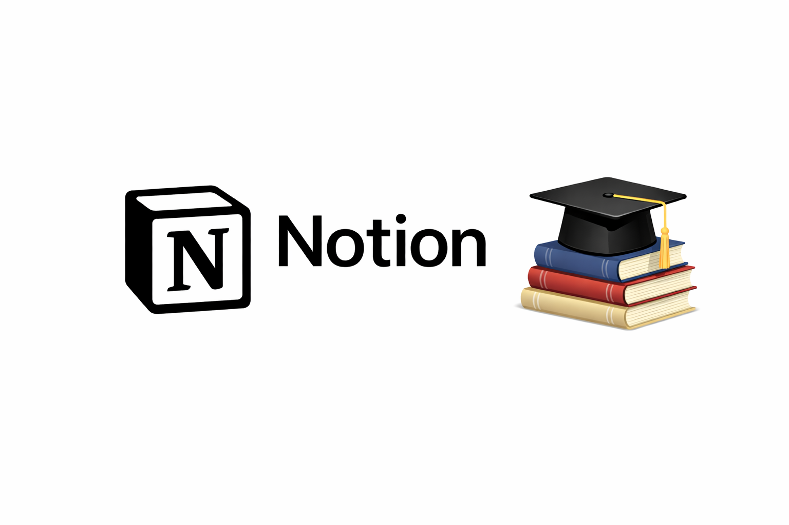
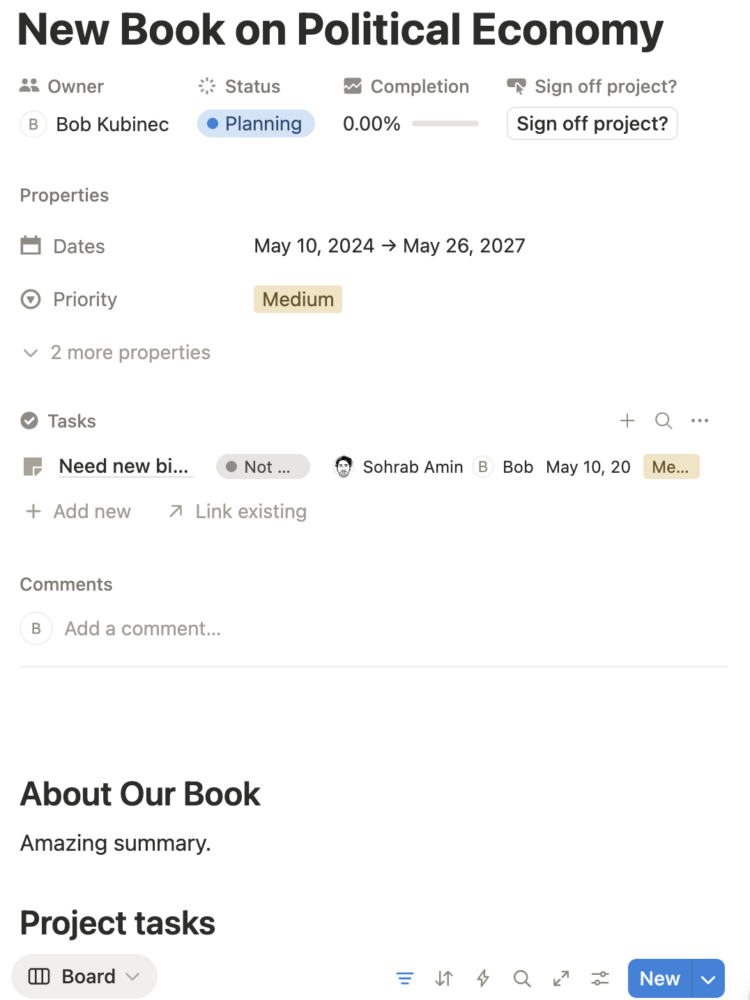
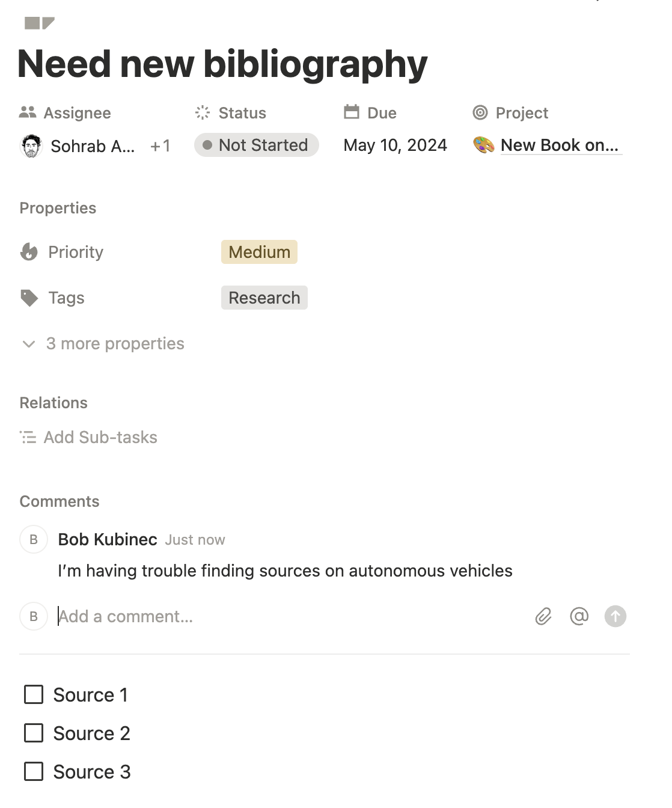

Notion is a powerful cloud-hosted software suite for task and project management. For many academics like me, who always have too many projects to keep track of, this type of tool seems potentially useful. The problem is going from potential to actually useful. I’m sure you’ve set up other tools like Trello or Asana one time or another, only to abandon them in the end.
I’ve found Notion to be quite helpful for my workload to the point that I primarily use it for projects–and I’ve found that when I don’t use it, coordination suffers. I’m writing this blog post to show some ways I’ve found the tool be most useful for academic research projects, which have their own unique challenges. Best of all–everything I describe can be done with Notion’s free academic plan: see the link here to sign up.
Overview of Notion
Notion has features from a range of online software you may have used before, such as Google Drive and Trello/Asana. What sets Notion apart is its reliance on databases. A database is simply a fancy spreadsheet; Notion allows you to create these with many options and different types of columns. It also lets you summarize these databases and present them in different graphical forms. For that reason, it is more flexible than other project management software options.
It also means that Notion can be used for all kinds of things, from running a website to managing budgets. My main aim in this tutorial is to focus on task and project management within Notion in the way that academics tend to work. There are many other things that Notion can do, and this tutorial only has my idiosyncratic (but hopefully useful) take on what works.
The two most basic components in Notion are pages (think of them like a blank Google Doc) and databases. The former are essentially blank canvases within which you can put anything from text to video to code. Databases are collections of records and can be displayed within other pages (using what are called views) or on their own page in a couple of different formats as I’ll show below.
From my experience, pages are mainly useful when you have some big project or idea, and you need a blank canvas where you’ll be posting a lot of notes. Otherwise, you can keep most of your notes and ideas on individual task and project records, which are located within databases. Each page you create (or database) will make a new link on your Notion sidebar, and you can even nest pages and databases within categories:

In the image above, the Tasks and Projects items are databases while Facebook Climate is a general page. In practice, you will probably have lots more uses and combinations of these basic items that I can show in this tutorial. For example, you could in theory have one big page and just embed lots of databases inside of it, etc. However, for my purposes, I’ve found that databases are powerful enough that you can do most of your work within them without the need for additional pages.
For task management, Notion has two general types of databases: a task database in which each row is a separate task, and a project database in which each row is a separate project. Below are two screenshots illustrating what these look like in table (conventional form):


The columns (or in Notion speak “properties”) are defaults that are created whenever you add a database to your Notion account with either the Projects or Tasks templates. You can modify these databases however you want by either adding or removing columns; when you do so, you will add or remove attributes you can include for any of your tasks and/or projects. The Status property is one of the defaults and can be modified by adding or removing types of statuses for a project or task.
The main difference between Tasks and Projects is that Tasks are nested within Projects; or to put it another way, each Project can be made up of many Tasks. To create Projects and Tasks databases that are linked to each other out of the box, you can use the Project & Tasks template from Notion’s list of built-in templates (otherwise you have to link them yourself, which isn’t that hard but requires learning a bit more about how the databases work). In order to use the template, first make a new blank page (the + button on the sidebar), then click on Templates at the bottom of the page and search for Tasks and Projects. In this way you can create as many separate Tasks/Projects databases as you need that are linked to each other. When you create a fresh Notion account, it should give you at least one of each type of Project/Task database to get you started.
As I mentioned, these tasks and projects are quite powerful. First of all, Notion does not need to display them in a conventional table/spreadsheet form. Each database can be displayed in the classic Kanban Board (if you are familiar with Trello boards) by simply clicking on the Board option:

You can drag and drop individual tasks from one status category to another, and also re-arrange their order within categories vertically.
The tasks and projects have a lot of potential options in terms of attributes (and of course you can add your own if any are missing). Here is what the basic project template looks like when you click on the row in a project database:

and the same for a task:

How to Use These Things
As I have already mentioned, Notion is extremely powerful. I am sure that you could run large corporation or non-profit with it. However, academics usually do not have projects or tasks that involve nearly as many groups of people. At the same time, we do have projects that are quite intricate and take a long time. Furthermore, we almost always have a large number of discrete tasks–this is often one of the most difficult aspects of managing academic life. An academic must switch rapidly from managing student emails to reading sources to completing a peer review.
Task management can, for that reason, be enormously helpful and stress-relieving. Unfortunately for academics, though, we do not have any professionals to help us manage our tasks. Like entrepreneurs, we have to both plan and execute. While academics (and I am no exception) are happy to roll our eyes at the silly meetings our corporate friends must do on a daily basis, the other side of that reality is that no one helps us to manage the daily balancing of our many projects.
Project management itself takes time, which is I think why these tools do not always have high adoption in academia. If we spend too much time organizing everything we do, then we do not have the time to complete those tasks.
Thankfully, Notion is flexible enough to meet that level of useful–but not overly involved–task management. Also, what I’ve found is that following a set of principles about how to manage tasks is just as important as fancy software. For academic work, I don’t think that anything is necessary beyond the relatively simple Project/Task relation in Notion.
In fact, for much of my work, I just use a simple Tasks database with individual tasks. Remember, each task is also a page (you can add any details to it), and you can also add little check lists to each task. For example, suppose I need to do an R&R, I can create a task, and then within the task make a check list with each R&R comment. I could get more involved and make an R&R project, then a task for each comment–but that would be overkill. Again, it’s about finding the right level of complexity—creating that many tasks (and embedding them within a project) would take considerable time and not add a whole lot—at least if I’m working solo.
I’ve also found that there are a few very important principles to make this workflow useful:
- You can only work on tasks that are found in your task board.
You don’t want to have phantom tasks that you never write down. That can be a way of avoiding making decisions about how to spend your time. Only let yourself work on tasks that you’ve put in your board.
- You can only work on tasks that are “in progress.”
The Status indicator on each task that is shown above is incredibly useful. As an academic, it’s overwhelming to have too many tasks, and the reality is that you can only carve your time down into niches that are so small. I think this is one of the reasons that academics feel perpetually overwhelmed. What helps is to have only a few tasks set as “in progress”–those you are actually working on or have time to work on. Keep everything as as “Not Started” until you have time to do it. That can help you focus on getting things done rather than always wondering what you should do next.
- You should use Priority to determine work order.
Both Projects and Tasks come with a Priority column (Low/Medium/High). I’ve found this to be very useful for nailing down what I do next. Each task is given a priority, and then within each priority group, I can further order them in terms of what I will do next (i.e., drag and drop to sort them vertically). This ordering might also be determined by what I can do next; some tasks might be waiting on something external even if they are high priority. Then I can follow a simple rule of starting with the first High priority task, then doing the first Medium priority task, and so on. I’ve found this type of prioritization helps to finally nail down what I should actually do next–and importantly, doesn’t take all that much time to do. Just a few minutes in the morning.
So when are the projects more useful than just making individual tasks? I’ve found project records useful for very long-term agendas such as big surveys, book projects, articles, and the like. A project can have a lot of tasks associated with it, which is nice. You can also add notes to the Project page, which can be helpful for keeping information organized across tasks. The Project database also has a nifty counter for how many tasks you’ve finished and can have date ranges for when you will do the project. You could go the whole way and make a Gantt chart, but I think those are too involved to be useful for the open-ended research academics do.
In other words, there is no hard and fast rule for when you might want to go the extra mile and make a project versus just a task. You can also embed tasks within tasks, which Notion calls sub-tasks, but I’ve never found much use for those as they seem unnecesarily complicated (just use a project or add a checklist to the task). My projects are big goals that I want to accomplish, and they help me organize my tasks so I can think about what I need to do next to accomplish the goal. It is cool to click on a project page and see all the tasks I’ve accomplished or have yet to do.
That is the nuts and bolts of how I’ve found these tools to be useful for my individual workload. However, academics also collaborate quite a bit, and our collaborations are different than other fields because we are often working with people in different organizations. In the next section I’ll discuss how to use Notion with others—which is another strong point for the software.